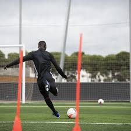

Football is one of the most popular sports in the world, loved by people of all ages and skill levels. Whether you're a beginner stepping onto the field for the first time or someone wanting to refresh your knowledge, this step-by-step guide will help you understand how to play football. From basic skills to team strategies, we'll cover everything you need to get started and improve your game.

Before you lace up your boots, it's important to familiarize yourself with the fundamentals of the game. Football, often called "the beautiful game," is played between two teams, each consisting of 11 players. The objective? To score goals by sending the ball into the opposing team's net, all while defending your own.
1.The Field Layout A standard football field has specific markings you should know: The Goal Area: The rectangular box near the goalposts where goalkeepers are most active. The Penalty Area: The larger box around the goal area used for penalty shots and defensive organization. The Center Circle: Used for kickoffs at the start of each half and after goals. The Touchlines and Goal Lines: The boundaries of the field. If the ball crosses these lines, it's out of play. 2.The Rules of the Game Each game consists of two 45-minute halves with a break in between. You can't use your hands unless you’re the goalkeeper inside your penalty area. Fouls, like tackling an opponent unfairly, result in free kicks or penalties. Matches are overseen by a referee and assistants to ensure fair play.

To play football, you'll need some basic gear: 1. A Football (Soccer Ball): Choose a size appropriate for your age group. 2.Football Boots (Cleats): Essential for good traction on the field. 3.Shin Guards: To protect your legs from tackles. 4.Goalkeeper Gloves (Optional): If you're playing as the keeper. 5.Comfortable athletic clothing, preferably a jersey, shorts, and socks. Investing in good-quality equipment ensures safety and enhances your performance on the field.
1.Passing Passing is crucial for teamwork. Use the inside of your foot for short, accurate passes and your laces for long passes. Play quick one-touch passes with teammates to build rhythm. 2.Dribbling Dribbling allows you to control the ball while moving. Keep the ball close to your feet, and use your stronger foot for better control. Practice basic maneuvers like the step-over or feint to beat defenders. 3.Shooting To score goals, learn to strike the ball with power and accuracy. Use the top of your foot (laces) for long-distance shots and the inside of your foot for precision finishing up close. 4.Controlling the Ball Master the art of receiving the ball under various conditions. Use your feet, thighs, or chest to stop and control the ball when it’s coming your way. 5.Tackling Tackling is essential for regaining possession. Use your body carefully to block or take the ball from your opponent, but avoid aggressive tackles that lead to fouls.
Every football team is divided into different roles. Understanding these roles helps you play football as a cohesive unit. 1.Goalkeeper: Defends the goal and is the only player allowed to use their hands. 2.Defenders: Safeguard the area near the goal and block opposing attackers. 3.Midfielders: Link the defense and attack, often covering the most ground. 4.Forwards (Strikers): Their main job is to score goals.
To play football effectively, you'll need to think beyond individual skills and focus on teamwork and tactics. Positioning: Stay in your assigned area to maintain the team's formation. Communication: Talk to your teammates to coordinate passes, runs, and defensive coverage. Attacking: Use overlapping runs, quick passes, and crosses to break through defenses. Defending: Work as a unit, keeping an eye on opponents and cutting off passing lanes. Practice set pieces like free kicks, corners, and penalties to refine your tactical play.
Consistency is key to improving your skills. Set aside time each week to: 1.Hone your dribbling, passing, and shooting skills. 2.Play friendly matches to apply what you've learned in real-game scenarios. 3.Build your stamina through aerobic exercises and strength training.

A senior football match consists of two 45-minute halves and must have a 15-minute break in the middle. A team can start with a maximum of 11 players, of which one is the designated goalkeeper. To continue a match, a team must have a minimum of 7 players on the field. The ball must be deemed spherical and have a circumference of 58-61 cm. A team is able to make substitutions at any time of the match and are able to make a maximum of three changes. A competitive game must be officiated by a referee and two assistant referees, also known as linesmen. The whole ball must cross the goal line for it to constitute a goal. A referee may award a foul if they believe an unfair act is committed by a player. A foul contravenes the laws of the game and can be given for a range of offences (for example, kicking the player, pushing, handball etc). Fouls are punished by the award of a free kick (direct or indirect, depending on the offence) or penalty kick to the opposing team if it is committed in the penalty box. In cases of foul play, a referee can penalise players with either a yellow or red card. A yellow card gives a player a warning about their conduct and a red card requires them to leave the pitch. In the event that a player receives two yellow cards, the referee will automatically show a red card. A throw-in is awarded to a team if the opposition kicks the ball over the sidelines. A corner kick is awarded to a team if the opposition kicks the ball over the goal line and either side of the goal posts. A player is deemed offside if they are in front of the last defender when a teammate passes the ball through to them (although this is often the most complicated of rules and has a range of interpretations).